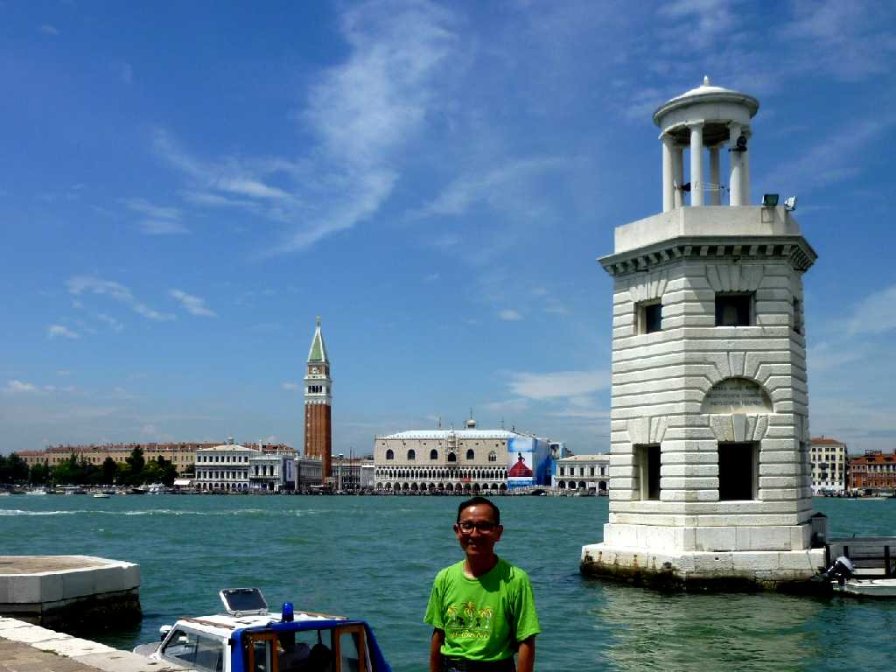
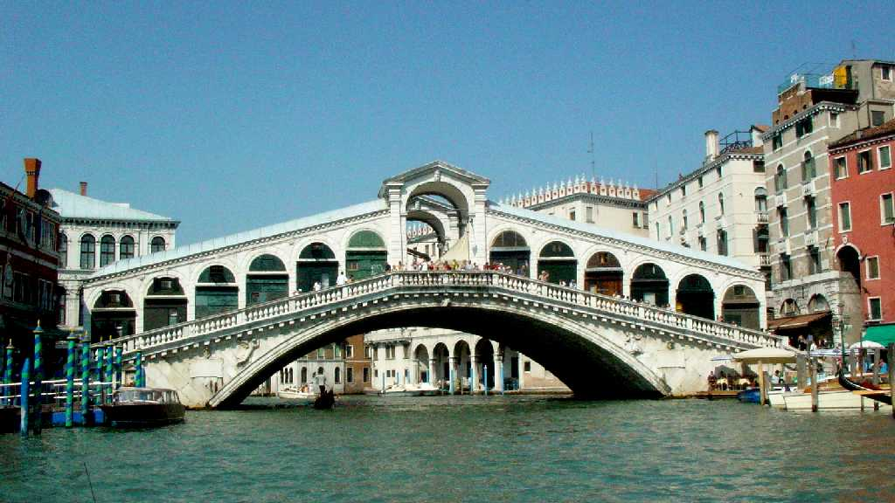
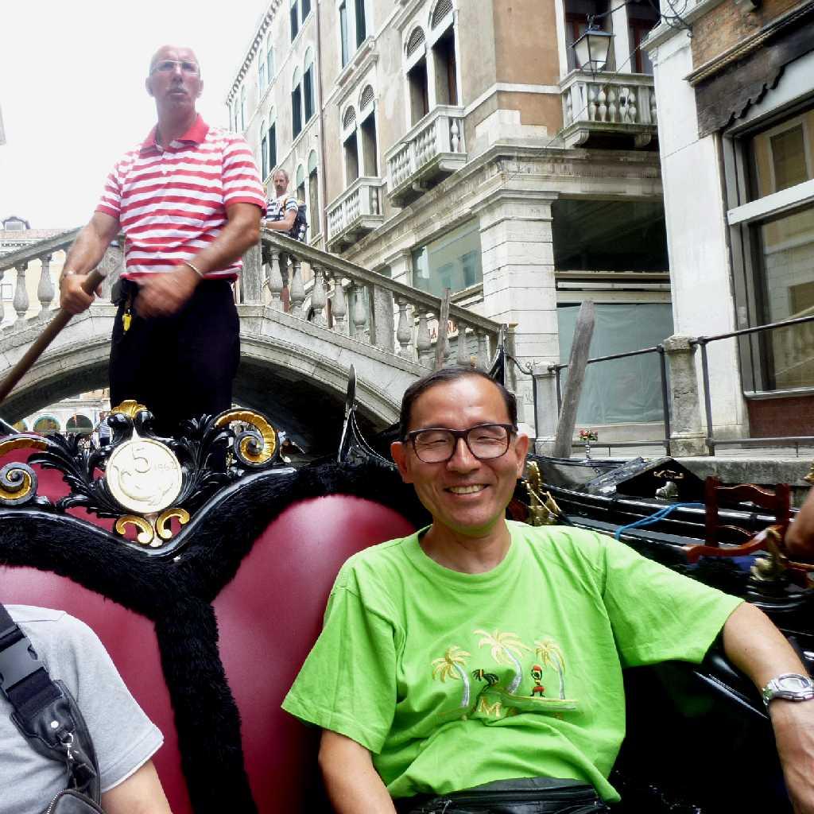

San Marco from San Giorgio Maggiore Venezia
アドリア海の女王と云われる水の都ヴェニスは１１８の島が４００以上のの橋で結ばれ水路と歩道の街で移動は水上バスと徒歩そしてタクシーに代わるゴンドラでホテルの出入口も船着場でした

June 30 2011 San Giorgio Maggiore
学生時代以来約４０年ぶりの再訪問で陸地側の安宿から今回はサンマルコ広場近くのホテルに宿泊

Ponte di Rialto

June 30 2011 Gondola